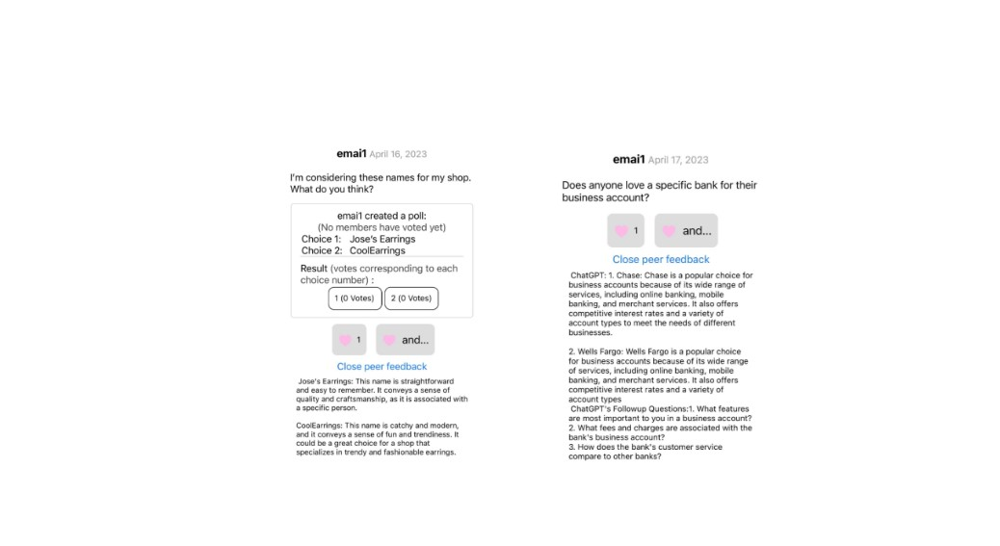
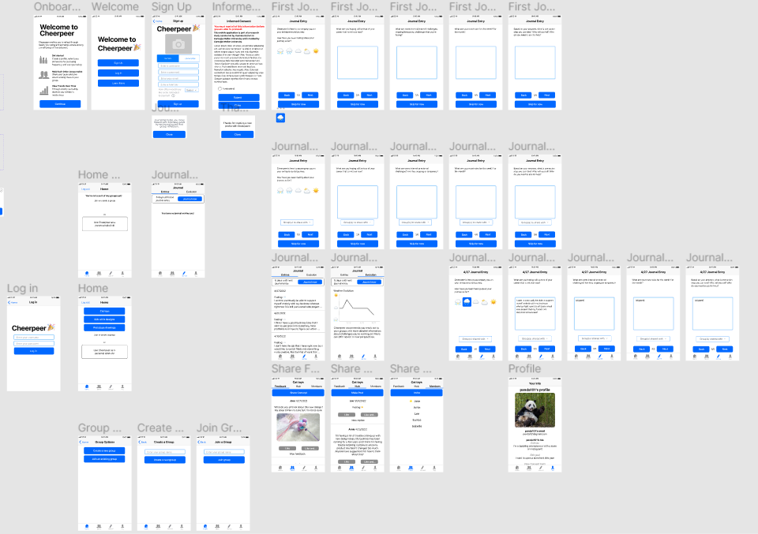
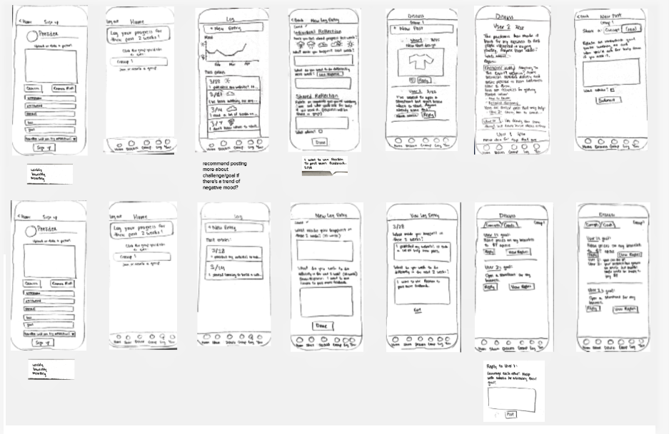
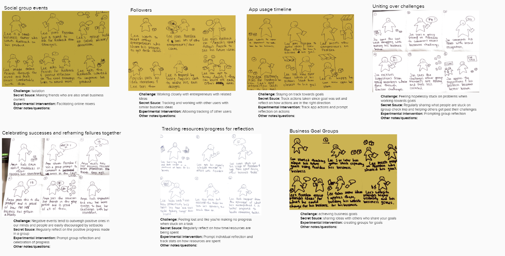

I'm a Carnegie Mellon University computer science student interested in software development and robotics.
I have prior experience as a Software Engineering Intern at Meta
building a full-stack internal tool and an Automation Controls Engineering Intern at Tesla
programming PLCs and HMIs to help bring a pilot production line to the start of production.
I also enjoy learning card tricks, designing 3D-printable models, and making digital animations. Check out my
hobby page here!
Feel free to contact me at emmaline.mai@gmail.com
or connect with me on Linkedin!
Projects
Cheerpeer
×
ChatGPT 3's responses to potential questions from entrepreneurs

High fidelity prototype (Figma)

Low fidelity paper prototypes

Storyboards
Click through to see other work!
My Role:
As a research assistant I made various contributions to our mobile app,
Cheerpeer and worked with the local Pittsburgh community to
co-design it.
My contributions included
- Enhancements (e.g., accessibility implementation, UI improvements)
- Maintenance and repair (e.g. bug fixes, code maintenance, unit testing)
- Oversaw deployments (e.g., builds for iOS and Android)
- Cheerpeer interview + workshop facilitation @ Prototype PGH
- Low and high fidelity prototypes for new features to help entrepreneurs progress towards personal/business goals through regular self-reflection
- Exploring large language models as a solution for quick feedback
Project Context:
Cheerpeer is a mobile app for IOS and Android that allows entrepreneurs to share designs and feedback on their creative work with each other. Cheerpeer builds on this by also supporting entrepreneurs in reaching their individual goals through regular reflection. In collaboration with the feminist makerspace Prototype PGH, over 3 years, 31 entrepreneurs have used Cheerpeer through an incubator. See the Figma prototype here!
Snake Robot Locomotion: Directional Compliance
×
My Role:
I ran experiments comparing robot locomotion with/without various types of directional compliance locomotion
by collecting, graphing, and analyzing data on feedback from sensors on the robot.
I noticed correlations between torque sensor readings and when the robot hit obstacles, and
developed a mass-spring-damper controls system that regulates the snake robot's amplitude
based on those torque readings.
Project Context:
This snake robot requires pushing off of obstacles in order to
propel itself forward, but complying with obstacles when they get in the way. Directional compliance
determines when the robot should be pliable and when it should push against obstacles.
Cardistry Dashboard
×
I created this dashboard
as a personal project to support myself through the process of practicing cardistry.
I had extremely minimal knowledge of front-end/back-end technologies prior to this,
and also wanted to explore making my own web app. It
recommends and displays YouTube tutorials of new moves for me to learn
using the Google Data API, and when I'm learning moves I can add, edit,
or remove them from a Microsoft Azure database. Finally, the dashboard suggests
combinations of moves for performing using features of the moves in the database and
a Markov chain.
ELM (Educate, Learn, Motivate)
×
My Role:
I worked on the Android app, and helped build the screens that
allowed available tutors and tutees to select who to connect with, and
allowed tutees to rate tutors after just finishing a call. This was my first
exposure to back-end work, and I introduced myself to SQL through working with this project.
However, I wasn't satisfied with my contributions to our final product and this
led to me building my own web app later.
Project Context:
This is a group hackathon project that lets people create accounts as tutors
or tutees, then search for instant tutoring over video call through either the Android app or the website.
Daily Dino
×
This project is still in progress. Currently, it makes a lot of API
calls to various public APIs (Wikipedia for the main image, PaleoDB
for lots of facts, the random dino from https://dinosaur-facts-api.shultzlab.com/).
The immediate largest next step for me is to perform webscraping to build my own database
of dinosaurs, and also make sure errors are handled correctly (eg.
with a dinosaur not existing on Wikipedia).
Project Context:
After visiting the Carnegie Natural History Museum I wished
I knew more random dinosaur facts off the top of my head, so I hoped
this extension would expose me to more random dinosaurs.
See the GitHub repo here!